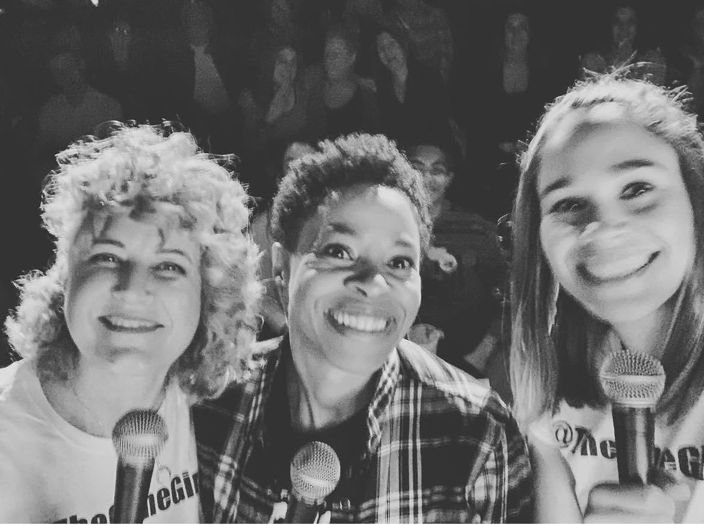
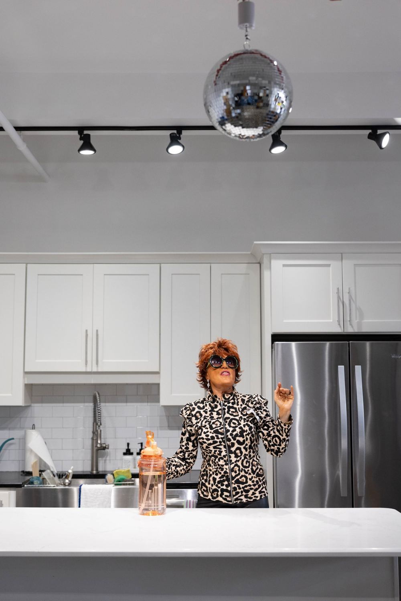

COMEDY & CHARLIE
A little funny,
by nature.
Stand-up sharpened Shauna’s eye for the details that make people interesting: the unexpected observation, the awkward pause and the story hiding in an everyday moment. That comic perspective carries into her acting, writing and character work.

LIVE
On stage.
A look back at The Gone Girls on stage — live comedy, shared chemistry and the energy of performing for an audience.

THE CHARACTER
Meet Charlie.
Charlie brings a distinct point of view, a larger-than-life presence and a playful edge to Shauna’s character work.




COMEDY WEBSITE & DATES
More comedy, elsewhere.
Shauna’s comedy has a dedicated home for show information, clips and booking details. The external site, upcoming dates and approved video links can be connected here once supplied.
Comedy site link, show dates and clips neededBOOKINGS